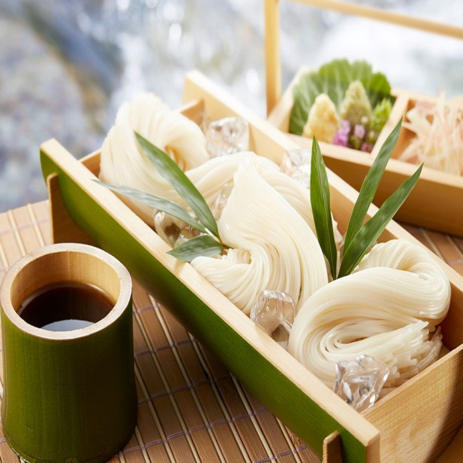
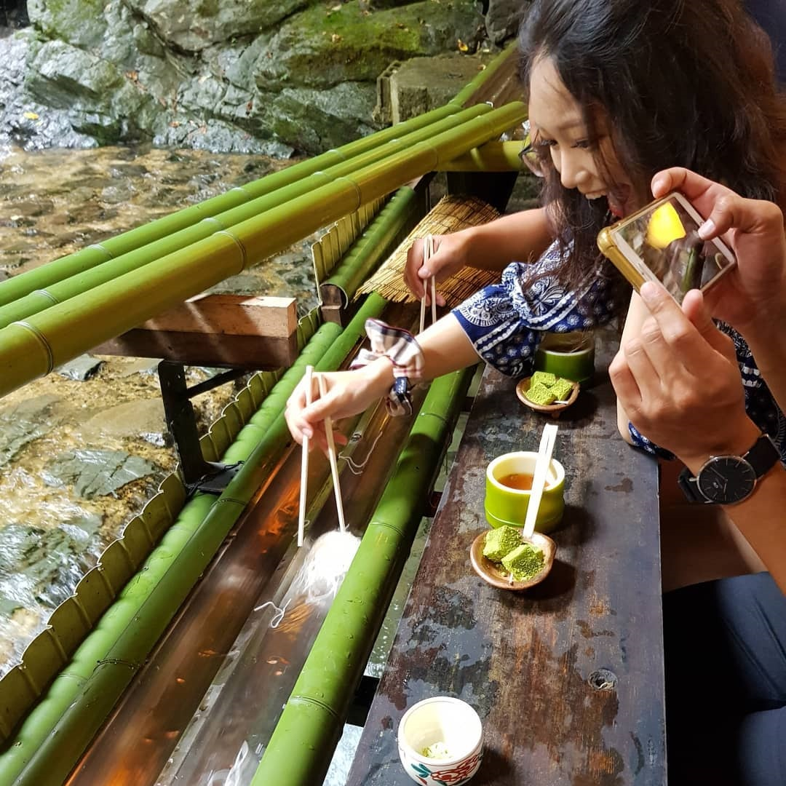
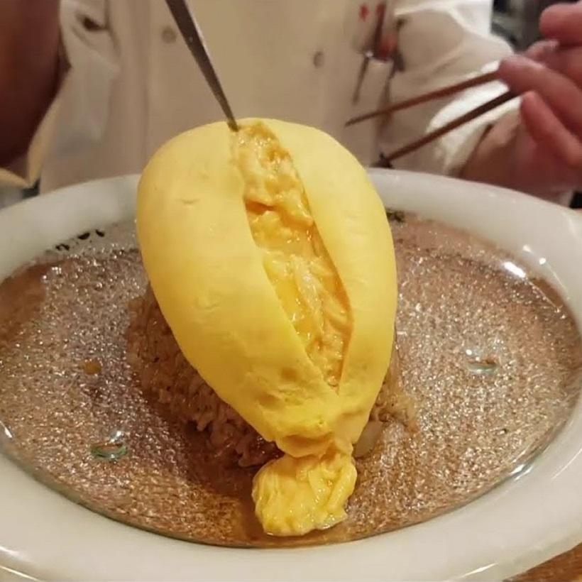
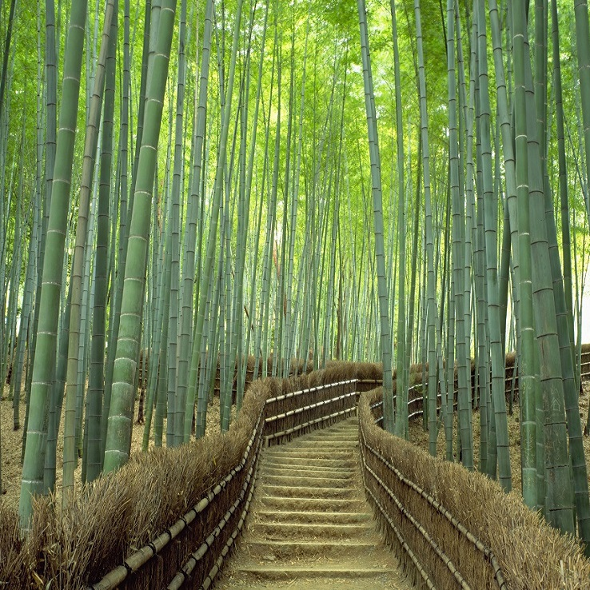
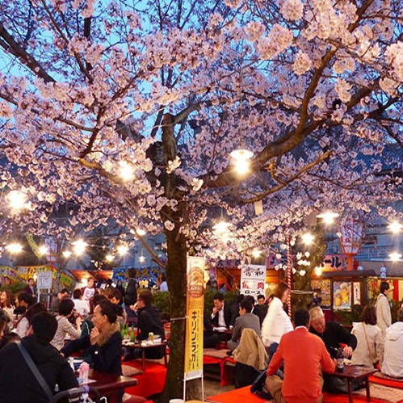
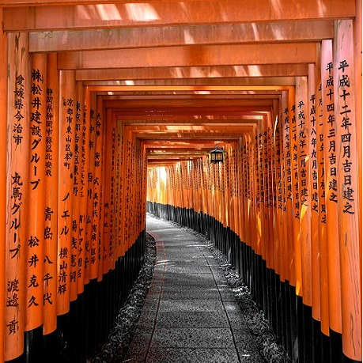
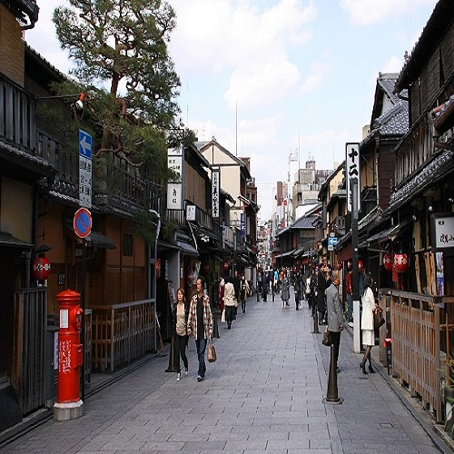

Nagashi Somen
Sōmen sind sehr feine, lange, runde weiße Fadennudeln aus Buchweizen- oder Weizenmehl mit kurzer Kochzeit und haben, verglichen mit Udon-Nudeln, einen eher süßlichen Geschmack.
Auf Bambusrohre kommen die Nudeln angeschwommen. Schnell muss man mit seinen Besteckt das Essen rausholen.
Somen werden zusammen mit gedünstetem Gemüse, etwas gebratenem, mit Shoyu mariniertem Tofu und Nori, Misosuppe, aber auch kalt zu Salat gegessen. Auch als Nachspeise sind Somen beliebt; zu kleinen Nestern geformt isst man sie zu Kokosmilch mit frischem Obst.

- Sōmen
- Ingwer
- Lauchzwiebeln
- Mentsuyu
- Wasser
Zutaten
Nagashi Somen
Sōmen sind sehr feine, lange, runde weiße Fadennudeln aus Buchweizen- oder Weizenmehl mit kurzer Kochzeit und haben, verglichen mit Udon-Nudeln, einen eher süßlichen Geschmack.
Auf Bambusrohre kommen die Nudeln angeschwommen. Schnell muss man mit seinen Besteckt das Essen rausholen.
Somen werden zusammen mit gedünstetem Gemüse, etwas gebratenem, mit Shoyu mariniertem Tofu und Nori, Misosuppe, aber auch kalt zu Salat gegessen. Auch als Nachspeise sind Somen beliebt; zu kleinen Nestern geformt isst man sie zu Kokosmilch mit frischem Obst.
- Sōmen
- Ingwer
- Lauchzwiebeln
- Mentsuyu
- Wasser
Zutaten
Omurice
Omurice ist ein Omelette, das mit Reis gefüllt ist. Darüber wird eine Soße, häufig Ketchup oder Kraftsauce (sauce demi-glace) gegeben. Der Reis ist wiederum mit Fleisch und/oder Gemüse gemischt.
Es ist ein japanisches Gericht mit Anlehnung an die europäische Küche und stammt aus dem 20. Jahrhundert. Der Name ist ein Kofferwort aus den japanischen Begriffen omuretsu (Omelette) und raisu (Reis).

- Reis
- Hähnchen
- Bohnen
- Shimeji Pilze
- Eier
Zutaten
Youshokuya Kichi Kichi
185-4 Zaimokucho, Sanjo Pontocho-Dori KudaruKyoto 604-8017 Japan
+81 75-211-1484
Omurice
Omurice ist ein Omelette, das mit Reis gefüllt ist. Darüber wird eine Soße, häufig Ketchup oder Kraftsauce (sauce demi-glace) gegeben. Der Reis ist wiederum mit Fleisch und/oder Gemüse gemischt.
Es ist ein japanisches Gericht mit Anlehnung an die europäische Küche und stammt aus dem 20. Jahrhundert. Der Name ist ein Kofferwort aus den japanischen Begriffen omuretsu (Omelette) und raisu (Reis).
- Reis
- Hähnchen
- Bohnen
- Shimeji Pilze
- Eier
Zutaten
attraktionen
Arashiyama
Der Bambuswald von Arashiyama befindet sich nördlich der Togetsukyobrücke und gilt als berühmte Sehenswürdigkeit in der Umgebung.
Ein Spaziergang durch den Bambuswald von Arashiyama nahe Kyoto dauert nicht lange, lohnt sich aber sehr. Nachdem man das Tenryuji, ein Eisentor, durchschritten hat ist es nicht mehr weit und man befindet sich inmitten dieser steil in die Höhe ragenden Gewächse.

Maruyama Park
Der Maruyama-Park ist ein beliebtes Naherholungsgebiet und zur Kirschblütenzeit schieben sich Lawinen von naturbegeisterten In- und Ausländer in diesen Park – entsprechend überlaufen ist der Park in dieser Zeit.
Im Maruyama-Park blühen im Frühling etwa 800 Kirschbäume, aber es gibt nur einen, der höher als 10 Meter ist. Dieser Kirschbaum steht im Zentrum der Parkanlage und ist ein gewaltiger Shidare-Zakura-Kirschbaum, der deswegen auch Gion-Shidare-Zakura genannt wird. Dessen Vorgänger wurde stolze 200 Jahre alt, bevor er 1947 abstarb. Der heutige Kirschbaum entstammt aus einer der letzten Samenernte des Vorgängers im Jahr 1928, wurde im Gewächshaus herangezogen und schließlich 1949 an die Stelle seines Vorgängers gepflanzt.

Inari Schrein
Der Schrein Fushimi Inari Taisha gehört zu den beliebtesten in Kyoto und ist für seine Torii-Alleen und seine unzähligen Fuchsstatuen bekannt. Der Schrein mit seiner langen Geschichte liegt in Fukakusa in Kyotos Bezirk Fushimi. Er ist auch nachts geöffnet, sodass Sie ihn zu Zeiten mit geringerem Andrang besuchen können. Neben den roten Torbögen und den der Gottheit Inari gewidmeten Füchsen bieten auch das Schreingelände und das Hauptgebäude zahlreiche interessante Eindrücke. Viele Gläubige besuchen den Schrein, um die Gottheit der Fruchtbarkeit und des Reises um ihre Gunst zu bitten, und erwerben Amulette oder andere Glücksbringer.

Altstadt Gion
Der Yasaka-Schrein ist der Hauptschrein des großen Gion-Fests, das jährlich Mitte Juli in Kyoto stattfindet und die gesamte Innenstadt in ein riesiges Volksfest verwandelt. Von hier aus starten die tragbaren Mikoshi-Schreine auf ihre Reise durch die Straßen der Innenstadt.
Gion ist Kyotos Geisha-Viertel. Auf der hölzernen Tatsumi Bridge oder in den gehobenen japanischen Restaurants und Boutiquen in der Hanamikoji Street sind häufig Geishas in farbenfrohen Kimonos zu beobachten. In Gion Corner werden traditionelle Kyomai-Tänze aufgeführt. Der Kennin-ji-Tempel ist für seinen Zen-Garten bekannt und am Yasaka-Schrein finden saisonale Festivals in einem von Laternen beleuchteten Hof statt. Das Nachtleben reicht von ruhigen Sakebars bis hin zu gut besuchten, kneipenähnlichen Izakayas.


buchen
Generelle Informationen